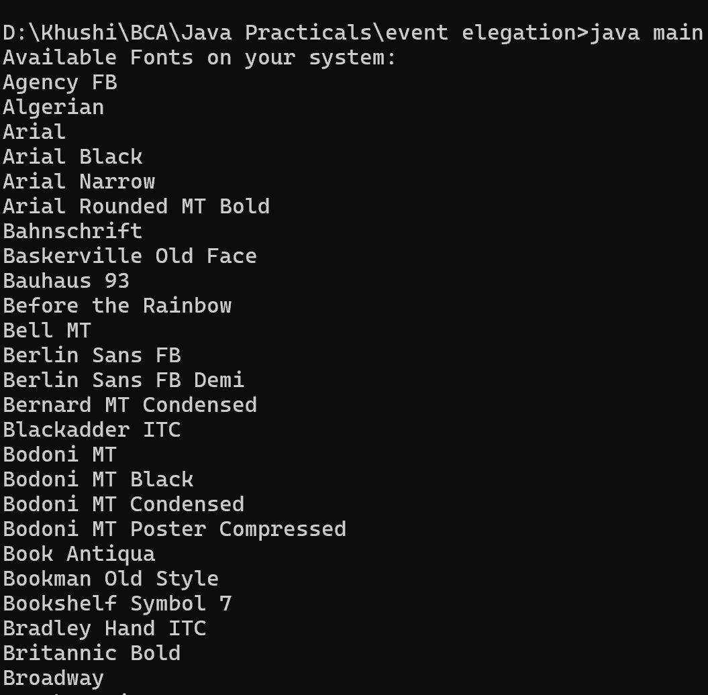

14. Java Program to Check Which Fonts are Available in a Local
System
import java.awt.GraphicsEnvironment;
class main {
public static void main(String[] args) {
// Get the GraphicsEnvironment of the local system
GraphicsEnvironment ge = GraphicsEnvironment.
getLocalGraphicsEnvironment();
// Get the list of all available font family names
String[] fontNames = ge.getAvailableFontFamilyNames();
// Display the available font names
System.out.println("Available Fonts on your system:");
for (String fontName : fontNames) {
System.out.println(fontName);
}
}
}
